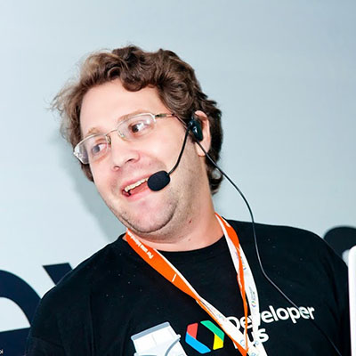
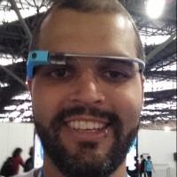
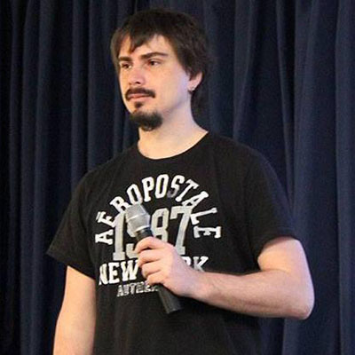

Sobre
DevFest é um evento mundial, realizado pela comunidade de desenvolvedores Google. Focado nas necessidades de cada comunidade local, ele tem por objetivo proporcionar a troca de conhecimento, networking e o fortalecimento dessas comunidades.
Em Porto Alegre teremos duas salas, cada uma delas com palestras, apresentadas por membros da comunidade e dos GDGs do sul do país.
Se você se interessa por isso e gostaria de um ambiente para troca de ideias e networking, inscreva-se no DevFest Sul!
Maiores informações sobre o evento, ou tens interesse em nos apoiar, entre em contato conosco através do e-mail: contato@devfestsul.com.br
Localização
Avenida Alberto Bins, Centro Histórico. Porto Alegre, Rio Grande do Sul
Palestrantes
-
09h00 - Sala Painera The Webcomponets Ecosystem
Rob Dodson @rob_dodson
Rob Dodson is a developer advocate at Google where he focuses on Polymer and Web Components. In previous roles he’s helped craft design systems for massive enterprise companies, user interfaces for console titles, and even built the occasional enchanted princess game. These days his mission is to fight for the mobile web and to help developers build great experiences.
-
10h00 - Sala Painera Automatizando testes em aplicações para Android com Robotium
Thayse dos Santos Severiano @Thayse_ss
Thayse dos Santos Severiano, analista de Testes na HB.SIS, em Blumenau. Está na área de TI a nove anos e atuando a quatro anos somente com testes, e nesse período, adquiriu a certificação CBTS. É organizadora do GDG Blumenau. No tempo livre, dedica-se a família, aos estudos de novas tecnologias, ferramentas e práticas de testes, atualização do seu blog, patinação e pintura em tela.
-

10h00 - Sala Cambará Carreira de Sucesso no mundo Open Source
Leo Balter @leobalter
Leo Balter acredita que a Open Web torna o mundo um lugar melhor para todos. Colaborador de projetos open source, divide o tempo escrevendo códigos e testes - principalmente em JS, luta pela privacidade e direitos dos usuários na internet, e acredita que nada disso é possível sem a força da comunidades organicas de colaboração. Engenheiro de Software por profissão, também curte um bom Blues boa guitarra, video games, e long board. Em um momento da vida resolveu também ser advogado.
-

11h10 - Sala Painera Se eu posso, você també pode - Animações para Desenvolvedores
Lucio Maciel @luciofm
Desenvolvedor com mais de 13 anos de experiencia, tendo dedicado os últimos três exclusivamente ao desenvolvimento Android. Atualmente trabalha na We Heart It e mantém o site Muambator Android. Antes de entrar de cabeça no mundo da mobilidade foi desenvolvedor C/C++ para Linux e Unixes em geral por mais de dez anos.
-
11h10 - Sala Cambará Desenvolvimento Fácil com AngularJS
Saulo Venancio @saulovenancio
Saulo Venâncio atua com desenvolvimento de software desde 2009, iniciando com desenvolvimento de aplicações enterprise em Java e atualmente atuando fortemente no Front End com Javascript/AngularJS. Atua como desenvolvedor na Nonlinear Creations, empresa canadense focada em customização de Sistemas Gerenciadores de Conteúdo.
-
13h30 - Sala Painera Unit Testing Android Apps
Felipe Lima @felipecsl
Felipe Lima é engenheiro de software há mais de 10 anos e atualmente trabalha com desenvolvimento Android na startup We Heart It. Já passou por empresas como HP e ThoughtWorks, atuando em variados tipos de projetos e tecnologias diferentes. Contribui ativamente em projetos Open Source, além de ter publicado no GitHub algumas bibliotecas bastante utilizadas pela comunidade.
-
13h30 - Sala Cambará Google Cloud Platform
Ale Borba @ale_borba
Community Manager @ Google
-

14h40 - Sala Painera Internet of Things com Node.js
Vitor Leal @vitorleal
Desenvolvedor com 9 anos de experiência trabalhando com desenvolvimento web e de software. Hoje focado em desenvolvimento de soluções de Internet of Things no Centro de Inovação da Telefônica VIVO.
-

14h40 - Sala Cambará Integrando Android com Windows Azure
Eduardo Costa @eduardoscosta
Co-fundador da Craftbox, organizer do GDG POA e agnóstico a tecnologia
-
16h20 - Sala Painera GUIs confortáveis com Go e QML
Gustavo Niemeyer @gniemeyer
Gustavo Niemeyer trabalha na Canonical, a empresa que criou o Ubuntu Linux, e foi o responsável pela criação de alguns dos principais projetos da empresa, como o Landscape e o projeto Juju de orquestração de serviços. Fora dos afazeres diários da Canonical, ele tem contribuído com a linguagem Go praticamente desde que ela se tornou pública, e é o autor de pacotes de desenvolvimento conhecidos como o driver MongoDB para Go, goyaml, gocheck, e vários outros. Recentemente também criou uma das principais integrações da linguagem com o ambientes gráficos através da linguagem QML.
-
16h20 - Sala Cambará Histórias de Usuário - Por que e como escrever requisitos de forma ágil?
Rafael Helm @rafaelhelm
Membro do time de desenvolvimento de soluções móveis da uMov.me. Desenvolvedor multidisciplinado, trabalhando em todas as fases do desenvolvimento de software, desde a análise de negócios até o deploy (entrega) do software para o cliente. Autor do livro User Stories - Por que e como escrever requisitos de forma ágil? Consultor e Instrutor da Wildtech ministrando treinamentos e workshops sobre Lean, eXtreme Programming e Scrum. Marido, pai, empreendedor e maratonista.
-

16h20 - Sala Cambará Android para Desenvolvedores iOS
Jackson F. Mafra @jacksonfdam
Instrutor de tecnologias mobile na Targettrust.
-
16h20 - Sala Cambará Gradle com Android Studio
Lucas Montano
Empreendedor e desenvolvedor desde 2002, com experiência em PHP, JAVA, JS e Android. Criador do aplicativo Finanças Pessoais e fundador da empresa Moolab. Atuando como desenvolvedor Android na Superplayer.fm.
Agenda
| Hora | Slot | Descrição |
|---|---|---|
| 08h00 | Credenciamento + Coffee Break | - |
| 09h00 - Sala Painera | The Webcomponets Ecosystem Google | Web Components give us the power to invent our own HTML elements, designed to be future-facing, interoperable, and beautiful on the multi-device web. With tools like Polymer and X-Tag, we can start taking advantage of this new technology today. Let’s take a look at some of the amazing elements that are already being produced, and explore how you can start leveraging them in your own projects. |
| 10h00 - Sala Painera | Automatizando testes em aplicações para Android com Robotium HB.SIS | Robotium é uma ferramenta que permite automação de testes para aplicações Android, que simula as ações de um usuário. Essa palestra visa apresentar o que é a ferramenta e mostrar o uso em uma aplicaçao simples, fazendo alguns testes básicos para demonstrar a simplicidade dela. |
| 10h00 - Sala Cambará |
Carreira de Sucesso no mundo Open Source
|
Sua vida profissional pode passar por uma revolução à medida em que você se imerge no mundo Open Source. Veja como pequenos atos geram grandes revoluções, além de ver como seguir esse longo caminho e fugir dos perigos ao longo dele. Vamos abordar também histórias de empreendedorismo de sucesso com as comunidades open source. |
| 11h10 - Sala Painera | Se eu posso, você també pode - Animações para Desenvolvedores We Heart It | Nessa palestra eu demostro quando e porque utilizar animações em aplicativos Android, como por exemplo para chamar a atenção do usuário, passar algum feedback, ou simplesmente ter uma transição de estados/telas mais suave, além de apresentar conceitos dos Frameworks de Animação e como utiliza-los para criar as animações apresentadas, na perspectiva do desenvolvedor. |
| 11h10 - Sala Cambará | Desenvolvimento Fácil com AngularJS Nonlinear Creations | Nesta palestra, será apresentado um dos frameworks mais quentes da atualidade para construção de páginas Web, o AngularJS. Criado pelo Google, este framework provê inúmeras facilidades para a criação de aplicações web de simples a avançadas, facilitando o processo de desenvolvimento. Você vai conhecer os conceitos básicos e as boas práticas que o framework segue e te ajuda a seguir, produzindo código de qualidade, com muito menos esforço. |
| 12h20 | Almoço | - |
| 13h30 - Sala Painera | Unit Testing Android Apps We Heart It | Como aplicar TDD para apps Android e construir uma suite de testes robusta e confiável. |
| 13h30 - Sala Cambará | Google Cloud Platform Google | O Google Cloud Platform permite aos desenvolvedores criar, testar e implementar aplicativos na infraestrutura altamente escalável e confiável do Google. Escolha entre serviços de computação, armazenamento e aplicativos para suas soluções da Web, móveis e de back-end. |
| 14h40 - Sala Painera | Internet of Things com Node.js Telefônica Brasil | Como desenvolver soluções de Internet of Things utilizando Node.js. O Node.js não só possibilitou o desenvolvimento BackEnd utilizando JavaScript mas também o desenvolvimento de software e aplicações embarcadas utilizando hardwares já consolidados no mercado como Raspberry Pi, Arduino, BeagleBone Black entre outras. |
| 14h40 - Sala Cambará |
Integrando Android com Windows Azure
Craftbox
|
Crie um backend para sua app na nuvem sem se preocupar com a infraestrutura, e ainda por cima de graça. |
| 15h50 | Coffee Break | - |
| 16h20 - Sala Painera | GUIs confortáveis com Go e QML Canonical | Vamos conversar sobre o suporte a linguagem QML para Go, que possibilita o desenvolvimento confortável de interfaces gráficas modernas de forma declarativa. A apresentação conta com uma introdução rápida a aspectos da linguagem Go e da QML através de exemplos interativos executados ao vivo. |
| 16h20 - Sala Cambará | Histórias de Usuário - Por que e como escrever requisitos de forma ágil? uMov.me | Rafael vai apresentar as motivações para escrever requisitos no formato de Histórias de Usuário, bem como um template para que você possa escrever suas primeiras histórias sem muita dor de cabeça. :-) |
| 16h20 - Sala Cambará | Android para Desenvolvedores iOS TargetTrust | Uma ambientação para quem está migrando do iOS ou pretende se aventurar no desenvolvimento em android. Aprenda sem sofrimento (ou pelo menos pouco) as diferenças das plataformas. |
| 16h20 - Sala Cambará | Gradle com Android Studio Moolab | Iniciando um projeto android com Android Studio e utilizando o Gradle para automatizar builds. |
| 17h30 | Encerramento | - |